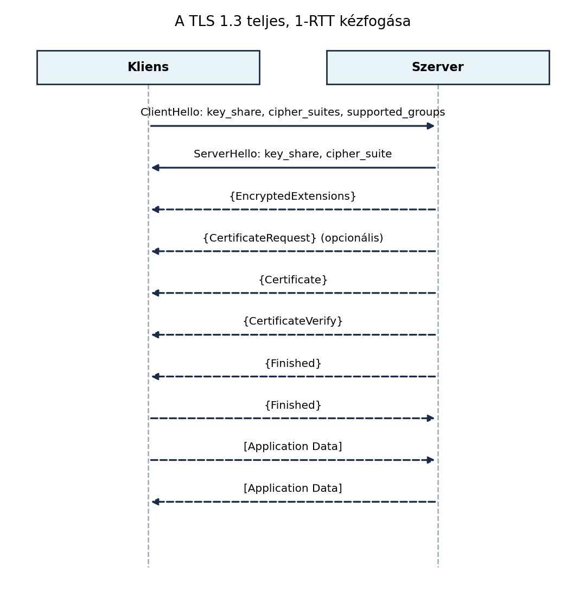

Amikor a böngésződ megnyit egy HTTPS-oldalt, néhány tíz milliszekundum alatt dől el, hogy a kapcsolat titkos lesz-e, ki a másik fél, és hogy a közbeékelődő támadó módosíthat-e bármit. A TLS 1.3 kézfogás ezt a feladatot végzi el, mégpedig úgy, hogy a korábbi TLS 1.2-höz képest egy teljes körútidőt (round-trip time, RTT) megtakarít. Ez a kézfogás a modern web biztonságának kapuja: ha itt hiba van, hiába erős az AES-GCM vagy a tanúsítvány.
A TLS 1.3 (RFC 8446) radikálisan egyszerűsítette a kézfogást. Eltűnt az RSA-kulcsszállítás, a statikus Diffie–Hellman, a rejtjelkészletek külön MAC- és kulcscsere-paraméterei, valamint a kézfogás első felének titkosítatlansága. A kézfogás most már a ServerHello után szinte azonnal titkosított csatornán folyik. Ebben az alfejezetben lépésről lépésre felépítjük a teljes 1-RTT kézfogást, megnevezzük minden üzenet kriptográfiai szerepét, és megnézzük, miért pont így néz ki.
Az alábbi ábra a TLS 1.3 teljes, szerver-oldali hitelesítésű kézfogását mutatja. A kapcsos zárójelben ({…}) lévő üzenetek a kézfogás-forgalmi titokból, a szögletes zárójelben ([…]) lévők az alkalmazásforgalmi titokból származtatott kulccsal védettek; a szaggatott nyíl minden titkosított üzenetet jelöl.

A kézfogás két szakaszra osztható. Az első, titkosítatlan szakaszban
a kliens és a szerver kiválasztja a paramétereket, és (EC)DHE-vel közös
titkot hoz létre. A második, titkosított szakaszban a szerver hitelesíti
magát a tanúsítványlánccal és egy transzkript-aláírással, majd mindkét
fél egy-egy Finished üzenettel igazolja, hogy ugyanazt a
kézfogást látta.
Definíció. A TLS 1.3 kézfogás az a protokoll, amelyben a kliens és a szerver a következőket éri el:
Finished üzenetben HMAC-ot számít a teljes
kézfogás-transzkriptre, így minden módosítás és közbeékelődés
kiderül.A kézfogás fő üzenetei: ClientHello,
ServerHello, EncryptedExtensions,
Certificate, CertificateVerify,
Finished. A HelloRetryRequest egy speciális
szerver-válasz, amely a ClientHello újbóli küldését kéri
más kulcscsere-paraméterekkel; a CertificateRequest és a
kliens Certificate, CertificateVerify üzenetei
a kölcsönös hitelesítést szolgálják.
A TLS 1.3 kézfogás alapértelmezésben 1-RTT: a kliens
már az első üzenetben elküldi az (EC)DHE nyilvános kulcsát, így a
szerver azonnal ki tudja számítani a közös titkot. A kézfogás után a
kliens a Finished üzenetével együtt már alkalmazásadatokat
is küldhet.
Az alábbi ábra a 28.1.7 példájának üzenetsorát mutatja üzenetenként a
védelmi szinttel (nyílt, kézfogáskulccsal vagy alkalmazáskulccsal
védett) és a növekvő transzkripttel. Az interaktív változatban
bekapcsolható egy közbeékelő (Mallory), aki a
key_share-eket a sajátjára cseréli: ekkor két külön
transzkript keletkezik, és a kliens a CertificateVerify
ellenőrzésénél bont, mert a szerver aláírása nem a kliens
transzkriptjére szól. Mallory a kliens oldali kézfogáskulcsot ismeri,
így a Finished önmagában nem leplezné le.
A kliens elküldi a ClientHello üzenetet, amely a
következő fontos mezőket tartalmazza:
legacy_version: formailag 0x0303 (TLS
1.2), mert a régi mezőt visszafelé kompatibilitás miatt megtartották; a
valódi verziót a supported_versions kiterjesztés
hordozza.random: 32 véletlen bájt, amely
frissességet ad.cipher_suites: a kliens által
támogatott, kizárólag AEAD-alapú TLS 1.3 rejtjelkészletek, például
TLS_AES_128_GCM_SHA256,
TLS_CHACHA20_POLY1305_SHA256.key_share: a kliens (EC)DHE nyilvános
kulcsa egy vagy néhány általa valószínűnek tartott csoporthoz (például
X25519 és P-256); nem kell minden támogatott csoporthoz küldenie. Ez a
mező teszi lehetővé az 1-RTT kézfogást.supported_groups: a kulcscseréhez
elfogadott csoportok (elliptikus görbék, véges testű DH-csoportok).signature_algorithms: az aláírási
algoritmusok, amelyeket a kliens elfogad a szerver aláírásához, például
rsa_pss_rsae_sha256, ecdsa_secp256r1_sha256,
ed25519.supported_versions: a TLS 1.3
jelzése.early_data a 0-RTT-hez.A ClientHello nyíltan megy, tehát a támadó látja a
kulcscsere-paramétereket, de a közös titkot nem tudja kiszámítani az ECDH és X25519 alfejezetben tárgyalt CDH-feltevés
miatt.
A szerver kiválasztja a paramétereket, és elküldi a
ServerHello üzenetet:
random: a szerver 32 véletlen
bájtja.cipher_suite: a kiválasztott
AEAD-rejtjelkészlet.key_share: a szerver (EC)DHE nyilvános
kulcsa ugyanabban a csoportban, amelyet a kliens
key_share-ében kapott.supported_versions: TLS 1.3.Ezen a ponton mindkét fél kiszámítja a közös (EC)DHE titkot: a kliens a szerver nyilvános kulcsát a saját privát kulcsával, a szerver a kliensét a sajátjával kombinálja. A nyers közös titkot soha nem használják közvetlenül: a TLS 1.3 kulcsütemezése HKDF-fel vezeti le belőle a kézfogás-titkokat és a forgalmi titkokat, ahogy azt a A TLS 1.3 kulcsütemezése, munkamenet-folytatás és 0-RTT alfejezet részletezi.
A szerver ezt az üzenetet már a kézfogás-titokból származtatott kulccsal titkosítja. Itt küldi el azokat a kiterjesztéseket, amelyek nem befolyásolják a kulcscserét, például:
server_name nyugtázása (a kért név maga a
ClientHello-ban nyíltan utazik) és az ALPN kiválasztott
protokollja (h2, http/1.1).supported_groups vagy
record_size_limit.Ha a szerver kölcsönös hitelesítést kér, az
EncryptedExtensions után egy külön, szintén titkosított
CertificateRequest üzenetet küld.
Az EncryptedExtensions titkosítása már a kézfogás ezen
pontján megvédi a kiterjesztések tartalmát a passzív lehallgatótól, és a
kiterjesztések a transzkript részévé válnak, így a Finished
és a CertificateVerify azokat is lefedi.
A szerver elküldi a tanúsítványláncát, amely a Tanúsítványlánc, hitelesítésszolgáltatók és
visszavonás alfejezetben leírt módon egy gyökértanúsítványhoz vezet.
A lánc minden eleme egy X.509 tanúsítvány. A TLS 1.3-ban a tanúsítványok
is titkosított kézfogás-üzenetben utaznak, így a tanúsítvány tartalma
(és például a benne szereplő további nevek) rejtve marad a passzív
megfigyelő elől. A célhoszt neve viszont a ClientHello
nyílt SNI-mezőjében (és a szerver IP-címében) továbbra is látszik,
hacsak a kliens nem használ Encrypted Client Hello-t (ECH, ellenőrzési
igény).
A kliens a tanúsítványt a beépített gyökértárolóval ellenőrzi: név, érvényesség, kibocsátó, aláírás, visszavonás (opcionálisan).
Ez a TLS 1.3 egyik legfontosabb újítása. A szerver a kézfogás transzkriptjének hash-ére aláírást készít a tanúsítványához tartozó privát kulccsal:
Pontosabban az aláírt bájtsor: 64 darab 0x20 bájt, a
„TLS 1.3, server CertificateVerify” szöveg, egy 0x00 bájt,
majd a transzkript-hash (RFC 8446 4.4.3). Az előtag miatt egy
szerver-aláírás nem használható fel kliens-aláírásként vagy más
protokollban (kontextuskötés).
A transzkript-hash a kézfogás összes eddigi üzenetének kriptográfiai hash-e. Az aláírás tehát azt bizonyítja, hogy a tanúsítvány privát kulcsának birtokosa valóban részt vett ebben a konkrét kézfogásban, és ugyanazokat az üzeneteket látta, mint a kliens. Azt is garantálja, hogy a közös titok és a kiválasztott paraméterek nem módosultak.
Az aláírási algoritmus a signature_algorithms
kiterjesztés szerint lehet RSA-PSS, ECDSA vagy Ed25519. A
CertificateVerify-ban a TLS 1.3 már nem engedi az RSA
PKCS#1 v1.5 aláírást (RSA-kulcsnál RSA-PSS kell); a tanúsítványláncon
belüli aláírásokban a régi tanúsítványok miatt még előfordulhat.
A szerver egy Finished üzenetet küld, amely HMAC-ot
tartalmaz a kézfogás-transzkriptre, a szerver kézfogás-forgalmi titkából
származtatott kulccsal:
A Finished tehát nem csupán nyugta, hanem hitelesített
integritás-ellenőrzés. Ha bármelyik korábbi üzenet egyetlen bitje is
megváltozott, a HMAC nem egyezik.
A szerver Finished üzenete után a szerver már küldhet
alkalmazásadatokat, mert a kézfogás az ő oldalán kész.
A kliens ellenőrzi a szerver CertificateVerify aláírását
és a Finished HMAC-ot. Ha minden rendben, a kliens elküldi
a saját Finished üzenetét, amelyet a kliens
kézfogás-forgalmi titkából származtatott HMAC-kulccsal számol.
Ha a szerver CertificateRequest-et küldött, a kliens
előbb a saját Certificate és CertificateVerify
üzeneteit küldi el, amelyekkel hitelesíti magát. A kliens
CertificateVerify szintén a transzkript-hash-re készült
aláírást tartalmaz.
A kliens Finished üzenete után a kliens azonnal küldhet
alkalmazásadatokat; a TLS 1.3 ezért nagyon hatékony.
Ha a szerver által választott csoport szerepel a kliens
supported_groups listájában, de a kliens ehhez nem küldött
key_share-t, a szerver HelloRetryRequest
üzenettel kéri a kulcsot. Ha nincs közös csoport, a kézfogás
handshake_failure hibával megszakad. A
HelloRetryRequest nem titkosított, és a következőket
tartalmazza:
cipher_suite: a kiválasztott
rejtjelkészlet.selected_group: a csoport, amelyből a
szerver kéri a key_share-t.cookie: opcionális védő süti a
DoS-támadások ellen.A kliens ekkor új ClientHello-t küld, amely már a kért
csoportban tartalmazza a key_share-t. A
HelloRetryRequest egy további RTT-t ad a kézfogáshoz, de
csak ritkán fordul elő.
A TLS 1.3 támogatja a kölcsönös hitelesítést (mTLS), amikor a szerver
CertificateRequest-et küld. A kliens ezután a saját
tanúsítványláncát és CertificateVerify aláírását küldi,
majd a szerver ellenőrzi. Ezt gyakran használják zárt rendszerekben,
API-közi hitelesítésre, például bankok és vállalati szolgáltatások
között.
A TLS 1.2-ben még létezett az úgynevezett RSA key transport: a kliens véletlen premaster secretet generált, és azt a szerver RSA nyilvános kulcsával titkosította. Ennek két súlyos problémája volt:
A TLS 1.3 emellett elhagyta a nem AEAD rejtjelkészleteket is: a CBC-mód padding oracle támadásai, a MAC-then-Encrypt szerkezet hibái, valamint a gyenge hash-algoritmusok mind azt mutatták, hogy a titkosítás és az integritás külön kompozíciója hibalehetőség. A TLS 1.3-ban minden rejtjelkészlet AEAD, tehát a titkosítás és az integritás egyetlen primitívben egyesül.
A TLS 1.3 kézfogás biztonsága a következő tulajdonságokra épül:
Certificate
tanúsítványlánca és a CertificateVerify aláírása a
tanúsítvány privát kulcsához köti a kézfogást. A támadó saját
tanúsítványt nem tud a szerver nevére kiállítani, mert ahhoz egy
hitelesítésszolgáltató privát kulcsa kellene.Finished üzenetek
HMAC-ot tartalmaznak a teljes kézfogás-transzkriptre, így bármilyen
módosítás észlelhető.Finished-et is tud
számolni; a kliens viszont a CertificateVerify aláírását a
saját transzkriptjére ellenőrzi, és ilyet csak a szerver
tanúsítványkulcsa tud készíteni, ezért az ellenőrzés meghiúsul. A
közbeékelődés csak akkor sikerülhet, ha a támadó rendelkezik a szerver
privát kulcsával, vagy hamis tanúsítványt tud elfogadtatni – ez utóbbi
ellen a Tanúsítványlánc, hitelesítésszolgáltatók és
visszavonás alfejezetben tárgyalt PKI-védelem hivatott.supported_versions kiterjesztésben jelzi a TLS 1.3-at, és a
transzkript-hash a kiterjesztéseket is tartalmazza. TLS 1.2-re
visszaminősítve már a TLS 1.2 saját védelme érvényes, ezért kell külön
jelző: a TLS 1.3-at támogató szerver, ha mégis TLS 1.2-t tárgyal, a
ServerHello.random utolsó 8 bájtjába a DOWNGRD
+ 0x01 jelzőt írja (TLS 1.1 vagy régebbi esetén
DOWNGRD + 0x00; RFC 8446 4.1.3). A TLS
1.3-képes kliens, amely ilyen jelzőt lát egy régebbi verziójú
ServerHello-ban, megszakítja a kapcsolatot. A random a TLS
1.2-es (EC)DHE kézfogásban a szerver aláírt
ServerKeyExchange üzenetének része, ezért a támadó nem
tudja eltávolítani.A biztonsági érvelésben fontos, hogy a TLS 1.3 feltételezi a HKDF biztonságát (a Kulcsszármaztatás: HKDF alfejezetben tárgyalt PRF-tulajdonság), az AEAD biztonságát (IND-CCA), és a digitális aláírás EUF-CMA biztonságát. Ezeknek a primitíveknek az együttes használatát a Játékalapú definíciók és a támadó előnye alfejezetben bemutatott játékalapú bizonyításokkal lehet formalizálni, de a teljes TLS 1.3 biztonsági bizonyítás nagyon összetett, és meghaladja a jegyzet kereteit.
Továbbvitt eredmény. A TLS 1.3 kézfogás itt bemutatott szerkezetét használjuk a A TLS 1.3 kulcsütemezése, munkamenet-folytatás és 0-RTT alfejezetben a kulcsütemezés részletezéséhez, a TLS a gyakorlatban: konfiguráció, vizsgálat és mTLS alfejezetben a gyakorlati beállításokhoz, a „Gyűjtsd most, fejtsd vissza később” és a posztkvantum-migráció alfejezetben a kvantumfenyegetettség elemzéséhez, valamint a 2. projekt: saját hitelesített kulcscsere-protokoll tervezése és elemzése projektben. A transzkript-hitelesítés elvét a Protokollszintű hibák: visszaminősítés, bemenetellenőrzés, kontextuskötés alfejezetben mélyítjük el.
Példa. Egy böngésző kapcsolódik a
https://example.com szerverhez. A tipikus TLS 1.3 kézfogás
így zajlik:
TLS_AES_128_GCM_SHA256 és
TLS_CHACHA20_POLY1305_SHA256 rejtjelkészleteket, a
key_share kiterjesztésben X25519 és P-256 nyilvános
kulcsokat, a signature_algorithms mezőben
rsa_pss_rsae_sha256, ecdsa_secp256r1_sha256 és
ed25519 algoritmusokat.TLS_AES_128_GCM_SHA256 rejtjelkészletet és az X25519
csoportot, majd elküldi a saját X25519 nyilvános kulcsát. Mindkét fél
kiszámítja a közös titkot.h2 (HTTP/2) protokollt fog
beszélni. Ez már titkosított.example.com tanúsítványt, amelyet egy köztes CA
írt alá, és a lánc a böngésző gyökértárolójában lévő root CA-hoz
vezet.CertificateVerify és Finished üzenetét, majd
elküldi a saját Finished üzenetét, és azonnal megkezdi a
HTTP/2 kérést.TLS_AES_128_GCM_SHA256 AEAD-védelemmel utazik.Ebben a példában a teljes kézfogás egyetlen RTT-t igényel: a böngésző az első körben elküldi az X25519 kulcsát, a szerver válaszában pedig már minden hitelesítő adatot megkap, így a kliens a válasz után azonnal küldhet alkalmazásadatot.
A TLS 1.3 kézfogás a gyakorlatban a Wireshark nevű hálózati protokollanalizátorral vizsgálható. Saját, helyben indított forgalom esetén a következő lépésekkel férsz hozzá a kézfogás üzeneteihez:
Kapcsolat indítása: nyisd meg a böngészőben a
https://example.com oldalt, miközben a Wireshark rögzíti a
hálózati interfész forgalmát.
Szűrés: a tls.handshake.type
szűrővel listázhatod a TLS-kézfogás üzeneteit. A TLS 1.3 üzenetek a
ClientHello és ServerHello kivételével
titkosítottak, ezért kulcsnapló nélkül a Wireshark a
ServerHello utáni rekordokat csak „Application Data”
típusú, átlátszatlan rekordként mutatja; az üzenettípus sem látszik. A
tls.handshake.type szűrő ilyenkor csak a
ClientHello-t és a ServerHello-t listázza. (A
felvételen megjelenő ChangeCipherSpec rekord a köztes eszközökkel való
kompatibilitást szolgálja, kriptográfiai szerepe nincs.)
Titkosítás feloldása: ha rendelkezel a
munkamenet kulcsaival, a Wireshark képes visszafejteni a TLS 1.3
forgalmat. Ehhez a SSLKEYLOGFILE környezeti változót kell
beállítani a böngésző indítása előtt:
export SSLKEYLOGFILE=~/tlskeys.log. Ekkor a Wireshark a
Edit → Preferences → Protocols → TLS menüben megadott
(Pre)-Master-Secret log filename mezőből beolvassa a
titkokat, és a titkosított üzeneteket is értelmezhetővé teszi.
Figyelem. A kulcsnapló az összes, ilyenkor megnyitott TLS-kapcsolat titkát tartalmazza. Csak külön, erre a célra indított böngészőpéldányban (külön profilban) használd, a vizsgálat után állítsd vissza a változót, és a fájlt biztonságosan semmisítsd meg; soha ne oszd meg.
Eredmény: a Wiresharkban láthatóvá válik a
teljes kézfogás: a ClientHello és ServerHello
mezői, a key_share értékek, a tanúsítványlánc, a
CertificateVerify aláírás, valamint a Finished
üzenetek HMAC-ja. Az EncryptedExtensions is megjelenik
visszafejtett formában.
Ez a vizsgálat remekül mutatja, hogy a TLS 1.3 a ServerHello után már
mindent titkosít; a Wireshark visszafejtés nélkül a
ServerHello után csak átlátszatlan „Application Data”
rekordokat lát, az üzenettípusokat nem. A saját forgalom elemzése
biztonságos, de mások forgalmának lehallgatása jogi és etikai
szabályokba ütközik – ahogy azt a Etika, jog
és a felelős kriptográfiai gyakorlat alfejezet rögzíti.
verify=False típusú hívás, amely elfogadja
a hamis tanúsítványokat. Ez közbeékelődéshez vezet. Mindig ellenőrizni
kell a láncot, a nevet és a visszavonást.Finished ellenőrzésének elhagyása.
Ha egy implementáció nem ellenőrzi a Finished HMAC-ot, a
támadó módosíthatja a kézfogás üzeneteit, például a kiterjesztéseket;
szerver-hitelesítés nélküli (PSK) kézfogásban a Finished az
egyetlen transzkript-védelem. A Finished nem formalitás,
hanem a kézfogás integritásának zára.supported_versions kiterjesztése és a DOWNGRD
jelző erre kínál védelmet, de csak akkor, ha az implementáció
ellenőrzi.CertificateVerify és a
Finished üzenet között?Certificate üzenetet a TLS 1.3-ban?HelloRetryRequest célja, és hány RTT-t ad a
kézfogáshoz?1. feladat (A). Sorold fel a TLS 1.3 kézfogás üzeneteit a sorrendjük szerint, és mindegyikhez írd le egy mondatban, milyen kriptográfiai célt szolgál.
2. feladat (A). Miért nem elég a szerver
Certificate üzenete a hitelességhez? Mi szükséges még?
3. feladat (B). Egy támadó elfogja a
ClientHello és ServerHello üzeneteket, és a
ServerHello-ban kicseréli a szerver
key_share-ét a saját key_share-ére. Miért
bukik meg a támadás? Melyik üzenet ellenőrzése leplezi le, és miért nem
elég ehhez önmagában a Finished? Részletezd a
transzkript-hash szerepét.
4. feladat (B). Tegyük fel, hogy egy szerver
támogatja a TLS 1.3-at, de egy aktív támadó úgy módosítja a
ClientHello-t, hogy a szerver TLS 1.2-t tárgyaljon. Hogyan
tudja ezt kihasználni a támadó, és milyen TLS 1.3-mechanizmus védene
ellene, ha a szerver és a kliens helyesen implementálja?
5. feladat (C). Bizonyítsd informálisan, hogy a
CertificateVerify aláírás és a Finished
üzenetek HMAC-alapú transzkript-ellenőrzése együtt megakadályozza a
közbeékelődést, feltéve, hogy az aláírás EUF-CMA-biztonságos. Fogalmazd
meg a biztonsági feltevéseket és a redukciót.
6. feladat (D). Wiresharkkal rögzíts egy TLS 1.3
kézfogást saját böngésző és egy tesztszerver között. Állítsd be az
SSLKEYLOGFILE környezeti változót, majd a Wiresharkban
azonosítsd az egyes üzeneteket. Melyik üzenetek voltak titkosítottak, és
milyen rejtjelkészletet választott a szerver? Írd le a
megfigyeléseidet.
Önellenőrzés – válaszok
CertificateVerify üzenetben.ClientHello üzenet key_share
kiterjesztése tartalmazza a kliens nyilvános kulcsát. Ez azért fontos,
mert a szerver már az első válaszában ki tudja számítani a közös titkot,
így a kézfogás egyetlen RTT alatt lezajlik.CertificateVerify a szerver digitális aláírása a
kézfogás-transzkript hash-ére a tanúsítvány privát kulcsával; ez a
szerver hitelességét és a transzkript integritását bizonyítja. A
Finished HMAC-ot tartalmaz a transzkriptre a
kézfogás-forgalmi titokból származtatott kulccsal; ez a két fél
kulcsbirtoklását és a transzkript egyezőségét igazolja.Certificate üzenet a szerver
kézfogás-titkából származtatott kulccsal titkosított. A passzív
lehallgató nem ismeri a közös titkot, így nem tudja visszafejteni az
üzenetet. Ez a tanúsítvány tartalmát védi; a célhoszt neve a
ClientHello nyílt SNI-mezőjében ECH nélkül mégis
látszik.CertificateVerify aláírása és a
Finished HMAC-ja, így bármely üzenet megváltozása
észlelhető, és a két fél ellenőrizni tudja, hogy ugyanazt a kézfogást
látta.HelloRetryRequest akkor fordul elő, ha a szerver nem
fogadja el a kliens key_share-ét, például mert a kliens a
szerver által választott csoporthoz nem küldött kulcsot (ha nincs közös
csoport, a kézfogás handshake_failure hibával megszakad). A
szerver ezzel kéri, hogy a kliens új ClientHello-t küldjön
a megadott csoportban. Ez egy további RTT-t ad a kézfogáshoz.Feladatok – megoldások
1. feladat (A) megoldása. A sorrend:
ClientHello, ServerHello,
EncryptedExtensions, Certificate,
CertificateVerify, Finished (szerver), majd
opcionálisan a kliens Certificate,
CertificateVerify, és végül a kliens Finished.
A ClientHello a kliens paramétereit és (EC)DHE kulcsát
küldi; a ServerHello a szerver választását és (EC)DHE
kulcsát; az EncryptedExtensions a többi kiterjesztést; a
Certificate a szerver tanúsítványláncát; a
CertificateVerify a szerver transzkript-aláírását; a
Finished a HMAC-ot a transzkriptre, amely a kézfogás
integritását és a kulcsbirtoklást igazolja.
2. feladat (A) megoldása. A Certificate
csak a nyilvános tanúsítványláncot tartalmazza, de nem bizonyítja, hogy
a tulajdonos részt vesz a kézfogásban, vagy hogy a privát kulcsot
birtokolja. Ehhez kell a CertificateVerify aláírás, amely a
kézfogás-transzkript hash-én készült a tanúsítvány privát kulcsával.
Ezen kívül a Finished is szükséges a kulcsbirtoklás és a
transzkript egyezőségének igazolásához.
3. feladat (B) megoldása. Ha a támadó lecseréli a
ServerHello key_share-ét, akkor a támadó és a
kliens között egy másik közös titok jön létre, mint a támadó és a
szerver között. A transzkript-hash a ServerHello-t is
tartalmazza, tehát a kliens és a szerver transzkriptje eltér. A támadó
viszont a klienssel saját (EC)DHE-titkot hoz létre, ezért ismeri a
kliens oldali kézfogás-titkokat és a finished_key-t, és a
kliensnek helyes szerver-Finished-et tud számolni, a kliens
Finished-ét pedig ellenőrizni tudja. A
Finished tehát önmagában nem leplezi le. A kliens a
CertificateVerify aláírást a saját transzkriptjére
ellenőrzi, amely a támadó key_share-ét tartalmazza. Ilyen
aláírást csak a szerver tanúsítványkulcsa tud készíteni; a valódi
szerver a saját, eltérő transzkriptjét írta alá. A támadás tehát a
CertificateVerify-on bukik el (feltéve, hogy az aláírás
EUF-CMA-biztonságos és a tanúsítványlánc érvényes). A
Finished a kulcsmegerősítést és a teljes transzkript
egyezését biztosítja.
4. feladat (B) megoldása. A downgrade-támadó elfogja
a ClientHello-t, és úgy módosítja, hogy a
supported_versions kiterjesztésből törli a TLS 1.3-at, így
a szerver TLS 1.2-t tárgyal. Ezután a támadó kihasználhatja a TLS 1.2
gyengeségeit, például az RSA-kulcsszállítást vagy a CBC-mód padding
oracle-ét. Visszaminősítés után már a TLS 1.2 saját
Finished ellenőrzése fut, ezért kell külön védelem: a TLS
1.3-at támogató szerver, ha TLS 1.2-t tárgyal, a
ServerHello.random utolsó 8 bájtjába a DOWNGRD
+ 0x01 jelzőt írja (TLS 1.1 vagy régebbi esetén
DOWNGRD + 0x00). A TLS 1.3-képes kliens, amely
ilyen jelzőt lát egy régebbi verziójú ServerHello-ban,
megszakítja a kapcsolatot. A random a TLS 1.2 aláírt
ServerKeyExchange üzenetének része, ezért a támadó nem
tudja eltávolítani. A védelem csak akkor működik, ha a szerver beírja a
jelzőt, és a kliens ellenőrzi.
5. feladat (C) megoldása. A feltevések: (1) az
aláírás EUF-CMA-biztonságos, és a kliens helyesen ellenőrzi a
tanúsítványláncot; (2) CDH (passzív kulcstitkosság); (3) HKDF/HMAC PRF.
Az érv: ha a támadó módosít egy key_share-t, akkor a
CertificateVerify egy olyan transzkriptre vonatkozó
aláírás, amelyet a szerver sosem írt alá. Ez hamisítás, ami (1) miatt
csak elhanyagolható valószínűséggel sikerül. (Aktív közbeékelő a saját
key_share-ével mindkét kulcsot ismeri, ezért itt a CDH-t
nem kell megtörnie; a védelmet az aláírás adja.) Ha a
key_share-ek változatlanok, a támadó a (2) miatt nem ismeri
a közös titkot, így a finished_key a (3) miatt álvéletlen,
és érvényes Finished-et csak elhanyagolható valószínűséggel
tud előállítani.
6. feladat (D) megoldása. A konkrét mérés a
környezettől függ, de a megoldásnak tartalmaznia kell: a Wireshark
rögzítése után a tls.handshake.type szűrővel a
ClientHello, ServerHello,
EncryptedExtensions, Certificate,
CertificateVerify, Finished üzenetek
azonosítását. SSLKEYLOGFILE nélkül a
ServerHello utáni üzenetek átlátszatlan „Application Data”
rekordok, és a tls.handshake.type szűrő csak a
ClientHello-t és a ServerHello-t listázza; a
visszafejtés után látszik a típusuk és a tartalmuk. A kiválasztott
rejtjelkészlet a ServerHello cipher_suite
mezőjében olvasható. A feladat célja, hogy a tanuló a gyakorlatban is
lássa a kézfogás szerkezetét; a konkrét válasz a saját forgalom
elemzéséből következik.
A TLS 1.3 kézfogás (RFC 8446) a modern HTTPS biztonságának alapja. A
kliens ClientHello üzenetében már elküldi az (EC)DHE
nyilvános kulcsát a key_share kiterjesztésben, így a
szerver ServerHello válasza után mindkét fél birtokában van
a közös titoknak. A kézfogás többi üzenete –
EncryptedExtensions, Certificate,
CertificateVerify, Finished – már a
kézfogás-titokból származtatott kulcsokkal titkosított. A
CertificateVerify a transzkript-hash-re készült digitális
aláírás a tanúsítvány privát kulcsával, a Finished pedig
HMAC a transzkriptre, ami a kézfogás integritását és a kulcsbirtoklást
igazolja. A TLS 1.3 elhagyta az RSA-kulcsszállítást a forward secrecy
hiánya és a Bleichenbacher-támadás miatt, és kizárólag AEAD
rejtjelkészleteket enged. A HelloRetryRequest ritka
esetekben új ClientHello-t kér, a kölcsönös hitelesítés
pedig CertificateRequest-tel és a kliens
Certificate, CertificateVerify üzeneteivel
valósul meg. Továbbvitt eredmények: a kézfogás
kulcsütemezését a A TLS 1.3 kulcsütemezése,
munkamenet-folytatás és 0-RTT alfejezet részletezi; a gyakorlati
beállításokat a TLS a gyakorlatban: konfiguráció,
vizsgálat és mTLS alfejezet tárgyalja; a transzkript-hitelesítés
elvét a Protokollszintű hibák: visszaminősítés,
bemenetellenőrzés, kontextuskötés alfejezet mélyíti.
Az alfejezet a TLS 1.3 specifikációjára, az RFC 8446-ra épül; a
kézfogás üzenetei és mezői a stabil szabvány részét képezik. A
Wireshark-elemzéshez a SSLKEYLOGFILE környezeti változó és
a Wireshark TLS-preferenciái a gyakorlatban jól ismert, de a pontos
menüelnevezések a Wireshark verziójától függően változhatnak
(ellenőrzési igény). A Mozilla SSL Configuration Generator ajánlása a
gyakorlati TLS-konfigurációhoz forrás, de a konkrét rejtjelkészletek és
protokollverziók időben változnak; mindig a friss ajánlást kell követni
(ellenőrzési igény). A Python cryptography csomagra itt nem
támaszkodtunk, mert a kézfogás mély elemzése a Wiresharkkal történik; a
könyvtár TLS-API-jának verziófüggőségeit a Python-labor: hashlib, secrets és a cryptography
csomag alfejezet tárgyalja. A szöveg nem tartalmaz a szabványon
kívüli forrást; a valós incidensekre való hivatkozás a korábbi
alfejezetek összefoglalóiban már megtörtént.